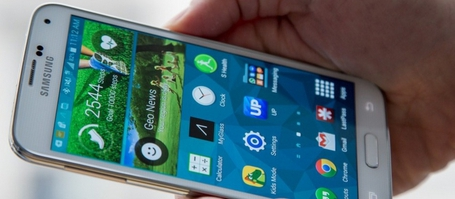

CR005 Architecture et contraintes techniques¶
- Date
03-18 12h-17h
- Type
Réunion
- PartiesPrenantes
ABI, HSI, KWG, MPA, PSO
- Lieu
Paris-AccessIT
- Organisateur
ABI
- Rapporteur
KWG
- Presents
ABI, HSI, KWG, MPA
- Objectifs
Définir l’architecture et revenir sur les fonctions associées à chaque noeud.
Attention
Ce compte rendu est un document de travail et n’est pas contractuel.
AccessIT rappelle l’architecture classique des applications déjà mises en place par leur soin.
Il n’y a aucune raison a priori de changer d’architecture sachant qu’elle fonctionne bien dans différents contextes.
Les matériels sécurité (bissas, caméras, etc.) sont toujours connectés directement au serveur de contrôle.
Ce serveur permet de gérer en temps réel les matériels en les commandant par leur driver
Le serveur d’applications doit être plus ou moins puissant selon le volume de données à gérer et le nombre de transactions à mettre en œuvre.
Pour les sites de Tokyo ou de Morrocoy, il n’y aura a priori pas de soucis, mais AccessIT a déjà eu affaire à des sites avec plus de 800 points d’accès, 80 000 badgeurs, avec des historiques à conserver sur 5 ans (base militaire en Sibérie).
De tels clients devront pouvoir être gérés avec iAccess.
Contrairement aux architectures traditionnelles, il n’y aura pas de poste fixe pour les gardiens.
Les gardiens seront équipés de smartphones XL (5.5 » au minimum), sous Android ou iOS, pour gérer les incidents.
C’est un grand changement car jusque-là des appareils spécialisés ou des postes fixes étaient utilisés.
Les applis des smartphones des gardiens seront connectées au serveur applicatif via une connexion sécurisée https et un réseau wifi interne sécurisé.
AccessIT mentionne qu’il est possible d’installer des systèmes de brouillage et bien d’autres choses, qui rendent ce réseau à la fois sûr et fiable.
Fig. 1 : Smartphones des gardiens¶
Les incidents doivent être localisés (e.g. bissas, point d’accès et/ou zone) et gardés dans l’historique.
Lorsqu’un gardien prend un incident, celui change d’état (« nouveau »-> »affecté »).
En fonction des cas, et la plupart du temps après s’être rendu sur place, le gardien peut agir sur l’incident pour l’ignorer ou le régler.
Un incident ignoré ou réglé est considéré comme fermé mais peut encore être commenté, en lui associant du texte, des photos ou de l’audio/vidéo.
Le règlement d’un incident dépend des cas.
En cas d’incident d’accès, le gardien peut fermer ou ouvrir une des portes du bissas (ou les deux) depuis sa tablette.
En cas d’incident d’incendie, le gardien peut déverrouiller un ou plusieurs bissas dans le sens de la sortie.
Quand le bissas est déverrouillé, la simple détection d’une personne devant le bissas l’ouvre le bissas et il est refermé une fois qu’elle est passée.
En situation de crise, le temps de réaction des gardiens peut devenir essentiel.
Pour améliorer la rapidité d’intervention des gardiens, iAccess fournira dans une seconde version un paramétrage avec des types d’incidents prédéfinis.
C’est le rôle des superviseurs de les définir et cela se fait généralement lors de la définition du plan sécurité initial en fonction des caractéristiques du site.
Assez souvent on découvre par la suite de nouveaux types liés à des situations répétitives (e.g. « tuyau percé » dans une usine, « malaise dans un bissas » dans un hôpital, « cartable coincé dans un bissas » dans une école, etc.).
Les gardiens peuvent alors sélectionner les types d’incidents correspondant à la situation.
Evidemment si nécessaire les gardiens peuvent utiliser la fonction téléphone de leur smartphone pour appeler les services compétents (urgences, police, armée, etc.)
La discussion sur le rôle des gardiens s’est achevée sur la conclusion suivante.
L’IHM des gardiens doit être particulièrement ergonomique vu le contexte d’utilisation à la fois quotidien et potentiellement intensif.
_
En ce qui concerne le poste superviseur (toujours un seul, pour des raisons de sécurité) et les postes administrateurs (autant que nécessaire), ceux-ci seront également connectés au serveur applicatif par une liaison Ethernet, avec un client lourd utilisant le protocole https.
Il s’agit dans les deux cas de PCs sous Debian.
_
Les administrateurs gèrent non seulement les inscriptions des badgeurs, mais aussi les problèmes liés à la perte d’un badge.
Lorsqu’un badge est perdu, volé (y compris via agression), le badgeur est tenu d’en informer immédiatement le centre de sécurité.
Cela ne concerne pas les tickets avec des badges papier, qui sont gérés directement par la société qui les vend.
Quel que soit le type de badge, un badge est toujours associé à une seule personne à la fois et une personne ne peut posséder qu’un badge (pour un site) à un moment donné.
Les badgeurs sont connus au minimum par leur nom et leur prénom et un numéro d’identité national (NIN).
Le NIN utilisé dépend des personnes et des pays considérés.
Ce peut être le numéro de passeport, le numéro de carte d’identité ou tout autre document selon le pays.
Un mail et deux numéros de téléphone peuvent également être renseignés lors de l’enregistrement.
A chaque fois qu’un badge est donné à quelqu’un, qu’il est annulé suite à une perte ou un vol, l’opération doit être enregistrée dans l’historique.
Toutes ces opérations sont effectuées par les administrateurs de groupes.
Lorsqu’un badgeur appartient à plusieurs groupes, et si ces groupes sont gérés par différents administrateurs, n’importe quel de ces administrateurs peut gérer la perte du badge.
Finalement, le serveur applicatif est le seul élément de iAccess a être connecté à internet via tcp-ip.
C’est lui qui gèrera les web-services mentionnés auparavant.
_
Il est fait état d’un démarrage éminent de la phase de collecte des exigences.
Les spécifications UML seront faites par le groupe M1 MIAGE au sein de l’IM2AG à partir des comptes rendus de réunions réalisés jusque-là.
Les personnels de la société AccessIT ne seront pas disponibles dans les semaines qui viennent.
Il risque d’en être de même des membres IM2AG ayant participé à ces réunions, un voyage en Russie puis en Irlande étant prévu pour le prochain mois.